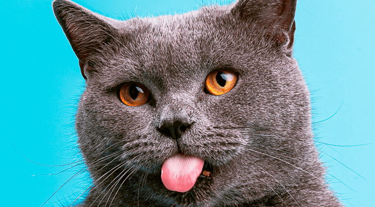

Perché i gatti fanno cosi?
I gatti hanno comportamenti affascinanti, e uno dei più curiosi è il gesto di mostrare la lingua, che molti proprietari interpretano come una smorfia buffa. Tuttavia, questo comportamento può avere diverse spiegazioni. Una delle ipotesi più comuni è il cosiddetto "Flehmen", un meccanismo attraverso il quale il gatto trasferisce feromoni e altre molecole dall'aria all'organo vomeronasale, situato nel palato. Questo processo aiuta il gatto a raccogliere informazioni sull'ambiente circostante.
Un’altra spiegazione potrebbe essere legata al rilassamento muscolare. I gatti, infatti, tendono a lasciar sporgere leggermente la lingua quando sono completamente rilassati o addormentati. In queste situazioni, i muscoli della bocca e della mandibola si allentano, causando talvolta l’esposizione della lingua. Questo comportamento è più frequente nelle razze brachicefale, come il Persiano, a causa della loro conformazione facciale.
In alcuni casi, il mostrare la lingua potrebbe anche essere un segno di disagio fisico, soprattutto se accompagnato da altri sintomi. Problemi dentali o infezioni orali possono indurre il gatto a mantenere la lingua fuori dalla bocca. È importante, quindi, osservare questo comportamento nel contesto generale della salute del gatto e, se necessario, consultare un veterinario.
Infine, alcuni gatti sviluppano questo comportamento come abitudine o peculiarità individuale, senza che ci sia una ragione medica o funzionale precisa. La varietà di motivazioni dietro il gesto della linguaccia rende questo comportamento tanto interessante quanto misterioso per gli studiosi del comportamento felino.